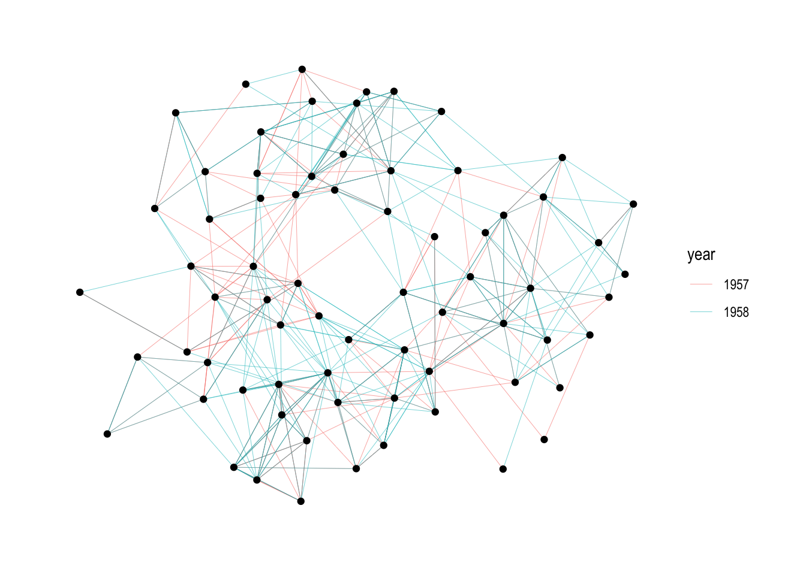
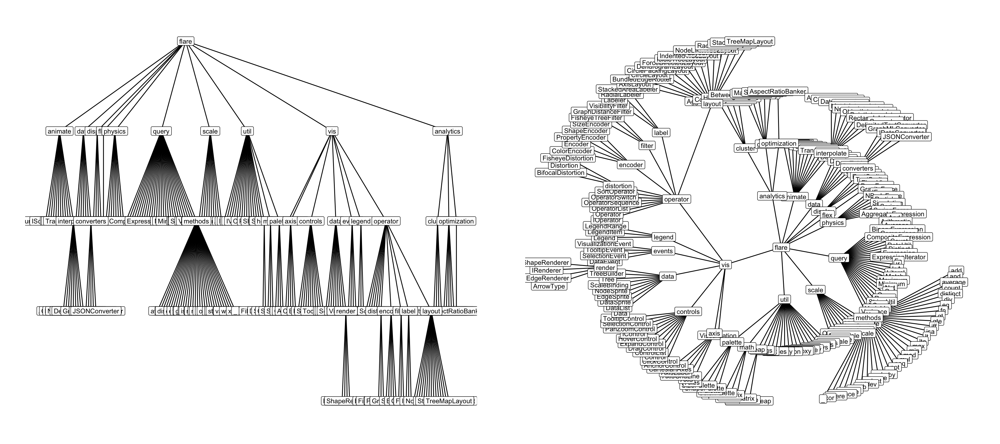
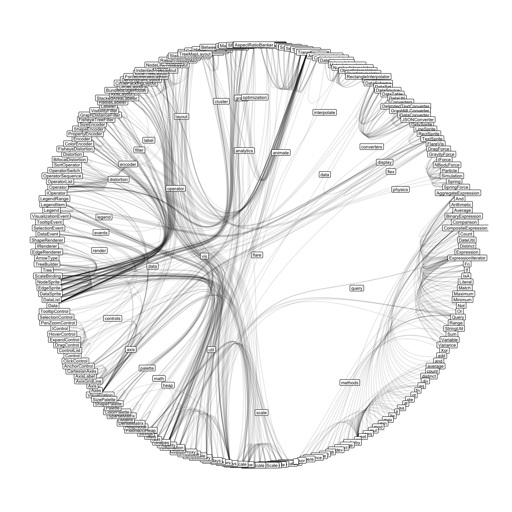

library(tidyverse)
library(knitr)
library(ggraph)
library(gridExtra)
library(networkD3)
library(tidygraph)
theme_set(theme_graph())Node - Link Diagrams
The most common network visualization strategy.
Reading (Chapter 9), Recording, Rmarkdown
- A node-link diagram is a visual encoding strategy for network data, where nodes are drawn as points and links between nodes are drawn as lines between them. The dataset below is a friendship network derived from a survey of high schoolers in 1957 and 1958, available in the
tidygraphpackage.
G_school <- as_tbl_graph(highschool) %>%
activate(edges) %>%
mutate(year = factor(year))
ggraph(G_school) +
geom_edge_link(aes(col = year), width = 0.1) +
geom_node_point()
- For trees, the vertical or radial position can further encode the depth of a node in the tree. The data below represent the directory structure from a widely used web package called flare.
G_flare <- tbl_graph(flare$vertices, flare$edges)
p1 <- ggraph(G_flare, 'tree') +
geom_edge_link() +
geom_node_label(aes(label = shortName), size = 3)
p2 <- ggraph(G_flare, 'tree', circular = TRUE) +
geom_edge_link() +
geom_node_label(aes(label = shortName), size = 3)
grid.arrange(p1, p2, ncol = 2)
In either trees or networks, attributes of nodes and edges can be encoded using size (node radius or edge width) or color.
The node-link representation is especially effective for the task of following paths. It’s an intuitive visualization for examining the local neighborhood of one node or describing the shortest path between two nodes.
In node-link diagrams, spatial position is subtle. It does not directly encode any attribute in the dataset, but layout algorithms (i.e., algorithms that try to determine the spatial positions of nodes in a node-link diagram) try to ensure that nodes that are close to one another in the shortest-path-sense also appear close to one another on the page.
p1 <- ggraph(G_school, layout = "kk") +
geom_edge_link(aes(col = year), width = 0.1) +
geom_node_point()
p2 <- ggraph(G_school, layout = "fr") +
geom_edge_link(aes(col = year), width = 0.1) +
geom_node_point()
grid.arrange(p1, p2, ncol = 2)
One common layout algorithm uses force-directed placement. The edges here are interpreted as physical springs, and the node positions are iteratively updated according to the forces induced by the springs.
Here is an interactive force-directed layout of the network from above, generated using the networkD3 package.
school_edges <- G_school %>%
activate(edges) %>%
as.data.frame()
simpleNetwork(school_edges)The key drawback of node-link diagrams is that they do not scale well to networks with a large number of nodes or with a large number of edges per node. The nodes and edges begin to overlap too much, and the result looks like a « hairball. »
In this situation, it is possible to use additional structure in the data to salvage the node-link display. For example, in a large tree, a rectangular or BubbleTree layout can be used.

If a large network has a modular structure, then it is possible to first lay out the separate clusters far apart from one another, before running force directed placement.

If many edges go through a few shared paths, it may be possible to bundle them.

Bundled connections can be visualized using the geom_conn_bundle geometry in ggraph. Before using this layout, it is necessary to have a hierarchy over all the nodes, since shared ancestry among connected nodes is how the proximity of paths is determined.
from <- match(flare$imports$from, flare$vertices$name)
to <- match(flare$imports$to, flare$vertices$name)
ggraph(G_flare, layout = 'dendrogram', circular = TRUE) +
geom_conn_bundle(data = get_con(from = from, to = to), alpha = 0.1) +
geom_node_label(aes(label = shortName), size = 2) +
coord_fixed()
- To summarize, node-link diagrams are very good for characterizing local structure, but struggle with large networks.